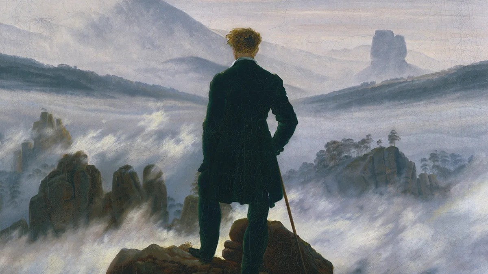

Pricing Out the Outliers
May 16, 2026
"Whoso would be a man must be a nonconformist." - Ralph Waldo Emerson

Human progress is a concatenation of the removal of friction. Domesticating crops and animals meant survival no longer demanded constant movement. The written word, printing press, and institutional libraries all meant that knowledge could persist beyond memory. The proliferation of information and communication technology compressed distance and time for ideas and capital at scale. Each generation inherits a world where something once difficult becomes increasingly effortless.
But because this pattern is so consistent, we have also inherited the assumption that making something easier is, by definition, making it better.
A reasonable conclusion is that increasing the rapid access to information and intelligence will ultimately solve society’s problems. Throughout modern history, each leap in information access and technology has promised to make us sharper and more capable. However, as friction and struggle disappear, the same forces that lift the floor somewhat less visibly narrow the variance of human pursuits and output. Difficulty and failure force creative experimentation, independent reasoning, and idiosyncratic solutions.
Cliff Asness touches on some of these ideas in The Less-Efficient Market Hypothesis, hypothesizing that even though humans are more informed than ever before, because of technologies like social media, “markets have become less informationally efficient in the relative pricing of common stocks.” Never before have investors had such immediate access to earnings calls, expert commentary, financial models, alternative data, and the collective interpretation of millions of market participants reacting in real time. In a strange inversion, greater informational access can narrow rather than expand the space of independent thought.
In a Goodhart’s law-ish way, as metrics and efficiency have become more legible, humans have obsessively compounded optimization to the point of grinding away any variance and collapsing towards a dominant strategy. Sports, music, film, art, research, and more feel like they have lost their character that once was rooted in differentiation and originality. When performance becomes measurable, those systems inevitably begin optimizing for what can be measured. This is often at the expense of what made them compelling in the first place. What makes this difficult to recognize is that optimization often looks like progress in the aggregate, with average outcomes improving and systems becoming more predictable and efficient. But something harder to quantify begins disappearing in parallel.
I wrote another essay about this effect in the context of startups and venture capital. In short, as founding a startup becomes more and more popular and success continues to depend heavily on raising money, the logical move for an aspiring founder is to be maximally legible to capital and mold themselves and their idea into whatever is most likely to get funded at the current moment. One would think that greater access to information would result in better informed participants making better decisions, yet in practice, we see a version of the Keynesian beauty contest. With more information and more efficient feedback loops, legibility becomes the safest path and ends up compressing the range of truly novel ideas, which historically produces the worst outcomes for both the investor and the founder.
The more predictable a message is, the less information it contains. A universe full of identical people producing identical experiences would contain no information at all. An omniscient god cannot be surprised.
These patterns are currently evolving into a much more concentrated and unrestricted form. We are being presented with a widespread democratization of intelligence, which suggests that there might exist a world where we end up over informing, optimizing, and amusing ourselves to death.
In its simplest form, a large language model is a function trained to assign probabilities to the next token in a sequence given everything that came before it. The model is rewarded in training for producing high-probability completions—the most probable next token. What this gets us in practice is a generation of frontier models that are extremely good at producing the median informed response on effectively everything, rather than sustaining organic, spontaneous conversation. They are intentionally not very good at producing a response that you would not have arrived at, that surprises you, that is wrong-but-interestingly-wrong.
The computer cannot provide an organizing moral framework. It cannot tell us what questions are worth asking. It cannot provide a means of understanding why we are here or why we fight each other or why decency eludes us so often, especially when we need it the most.
Frequent use of AI, even among some very intelligent individuals, has begun to influence how they communicate. You can notice that they adopt similar phrasing and cadence in their speech and writing, embodying a version of the popular idea that you eventually become the average of who you spend the most time with. In this case, it’s some emerging form of mimesis that is no longer confined to human-to-human interaction.
Over time, increasing dependence on AI will come at the cost of developing independent thought. When language, structure, and reasoning can be outsourced, the incentive to struggle through ambiguity or arrive at original conclusions loses its purpose. Igor Chirikov, a researcher at UC Berkeley, authored a paper with results suggesting grades have shot up as a result of increased AI usage, not an increase in student learning. If the next generation of children is raised to be dependent on AI, their essential developmental years will be stunted by a lack of cognitive effort.
In a recent talk, Packy McCormick asks the question, “If new technology is so great, why are so many people unhappy?”
I think, in part, this is because of how easy and cheap it has become to take shortcuts and avoid committing to demanding cognitive effort. It’s great that people and businesses across the board will become more time and cost efficient than ever, but this abundance will lead to a world permanently in search of meaning.
The work of struggling through a problem—false starts, abandoned hypotheses, wasteful wrong turns—provides so much that arriving at the correct answer quickly does not. Chirikov shares this view, noting a “productive struggle” he believes to be required for learning. Putting forth deeply intentional effort on difficult problems builds memory, intuition, and conviction. Fighting to grasp something provides you with an understanding in a unique and constructive way.
The founding team behind Oscar Health tells the story of getting together to read the thousand or so pages of the Affordable Care Act over a weekend before settling on a plan for the company. Without taking too much credit from the team itself, it is probably (definitely) not the case that the multi-billion dollar insurance startup would exist today if they had instead chosen to ask ChatGPT to read the PDF and give them ten good ideas for a company.
I’m grateful to have finished school before the widespread adoption of ChatGPT. Small partial differential equations problem sets took days to wrestle with, and even though it felt frustrating and tedious, I got the most value out of the sustained effort rather than the concepts at hand. Development like this depends on time, attention, and a willingness to stick with problems beyond the most immediately available answer.
There is a small parable in the kabbalistic tradition. A man from the mountains comes down to the city, eats bread for the first time, and asks what it is. He is told it is made from wheat. He returns to his mountain, gathers raw wheat, eats it dry by the handful, and goes home convinced he has tasted what the city tastes. He has eaten the input. He has missed the thing made when the input is ground and kneaded and salted and left to rise and finally exposed to fire. Bread lives only in the baking.
Tradition, meaning, and discovery live in the work. When the path of least resistance becomes the default route to high-quality output, the capacities once built through effort begin to atrophy. Few will choose friction once it is optional, but a world optimized for ease risks losing both the development that comes from struggle and the unexpected insights discovered along the way. Progress in most domains does not tend to be made at the mean.
The truth is that as the struggle for survival has subsided, the question has emerged: survival for what? Ever more people today have the means to live but no meaning to live for.
We can optimize for convenience, legibility, and speed, or we can choose to preserve friction in moments where it matters. To think for ourselves, struggle with ideas, and follow curiosities that do not present immediate reward and satisfaction. There is no shortage of intelligence, information, or ability. What is scarce is the willingness to engage deeply, do the difficult work, experience and care about things, exert meaningful effort, and take the hard right over the easy wrong.